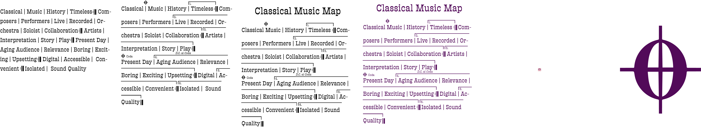

𝄀 Play 𝄇
D.C. al coda
𝄀 Play 𝄇
D.C. al coda
Classical 𝄀  Music 𝄀 History 𝄀
1.
Timeless
𝄇
Composers 𝄀 Performers 𝄀
2.
Live 𝄀 Recorded 𝄀 Orchestra 𝄀 Soloist 𝄀 Collaboration
𝄇
3.
Artists 𝄀 Interpretation 𝄀 Story
𝄀 Play 𝄇
D.C. al coda
coda Present Day 𝄀 4. Aging Audience 𝄀 Relevance 𝄀 Boring 𝄀 Exciting 𝄀 Upsetting 𝄇 Digital 𝄀 5. Accessible 𝄀 Convenient 𝄇 6. Isolated 𝄀 Sound Quality 𝄂